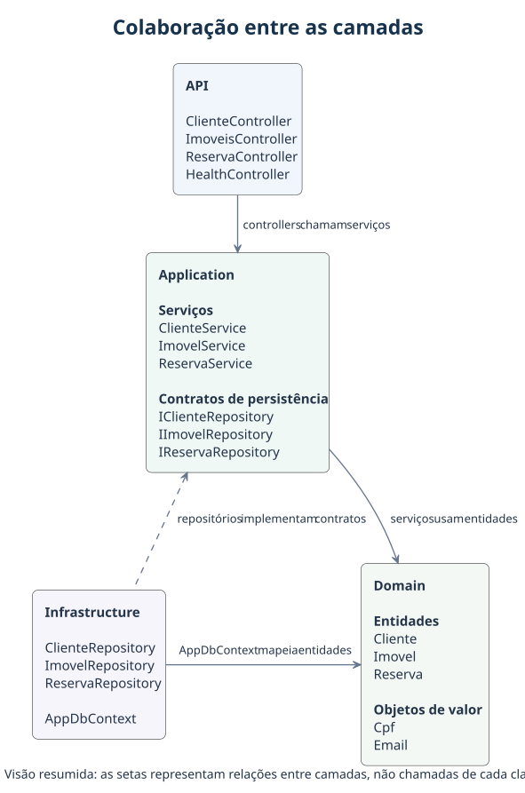

VISTA 03 · ARQUITETURA
Camadas de clientes
As referências que conectam a entrada HTTP à persistência.

Não foi possível carregar a imagem. Use o link SVG abaixo.
VISTA 03 · ARQUITETURA
As referências que conectam a entrada HTTP à persistência.

Não foi possível carregar a imagem. Use o link SVG abaixo.